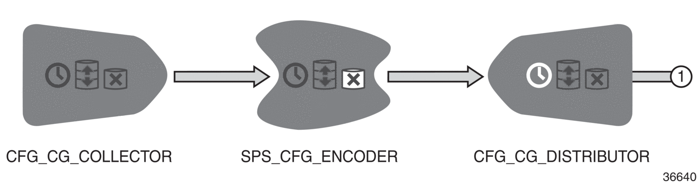

File output stream collects batches of output records from the database. It then encodes
the data in ASN.1 format and distributes the resulting output files to the target
destination. File output stream contains the following three nodes:
- CG File Collector Node – a node that reads a batch of output records from the
database and sends them forward in CGF (DR) internal format.
- ASN.1 Encoder Node – a node that converts the batch of output records into a file in
ASN.1 format.
- CG Distributor Node – a node used for delivering the output file to a predefined
destination.
Figure: Example of File output stream
